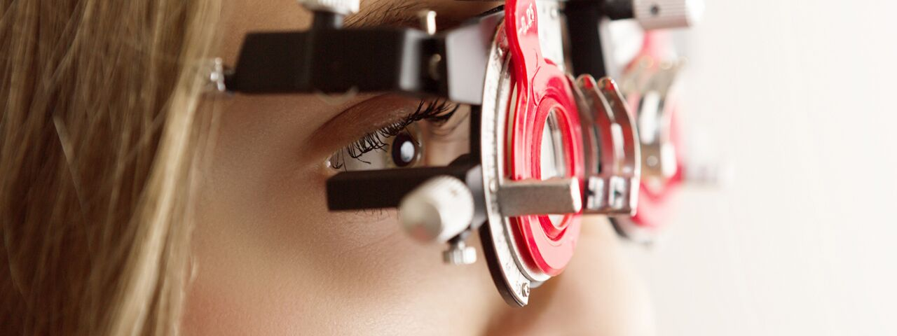

Technology – Advanced Eye Care

Technology – Advanced Eye Care
We use the most up-to-date technology to ensure the best eye care possible. Here are some of the different types of tests and equipment you may experience on a visit to
Corneal Mapping
Corneal topography, also known as photokeratoscopy or videokeratography, is a non-invasive medical imaging technique for mapping the surface curvature of the cornea, the outer structure of the eye. Since the cornea is normally responsible for some 70% of the eye’s refractive power, its topography is of critical importance in determining the quality of vision.
The three-dimensional map is therefore a valuable aid to the examining ophthalmologist or optometrist and can assist in the diagnosis and treatment of a number of conditions; in planning refractive surgery such as LASIK and evaluation of its results; or in assessing the fit of contact lenses. A development of keratoscopy, corneal topography extends the measurement range from the four points a few millimeters apart that is offered by keratometry to a grid of thousands of points covering the entire cornea. The procedure is carried out in seconds and is completely painless.
Special thanks to the EyeGlass Guide, for informational material that aided in the creation of this website.
Digital Retinal Imaging & OCT Scans
We use cutting-edge digital imaging technology to assess your eyes. Many eye diseases, if detected at an early stage, can be treated successfully without total loss of vision. Your retinal Images will be stored electronically. This gives our eye doctor a permanent record of the condition and state of your retina.
This is very important in assisting your optometrist to detect and measure any changes to your retina each time you get your eyes examined, as many eye conditions, such as glaucoma, diabetic retinopathy and macular degeneration are diagnosed by detecting changes over time.
The advantages of digital imaging include:
Quick, safe, non-invasive and painless
Provides detailed images of your retina and sub-surface of your eyes
Provides instant, direct imaging of the form and structure of eye tissue
Image resolution is extremely high quality
Uses eye-safe near-infra-red light
No patient prep required
Digital Retinal Imaging
Digital Retinal Imaging allows your eye doctor to evaluate the health of the back of your eye, the retina. It is critical to confirm the health of the retina, optic nerve and other retinal structures. The digital camera snaps a high-resolution digital picture of your retina. This picture clearly shows the health of your eyes and is used as a baseline to track any changes in your eyes in future eye examinations.
Optical Coherence Tomography (OCT)
An Optical Coherence Tomography scan (commonly referred to as an OCT scan) is the latest advancement in imaging technology. Similar to ultrasound, this diagnostic technique employs light rather than sound waves to achieve higher resolution pictures of the structural layers of the back of the eye.
A scanning laser used to analyze the layers of the retina and optic nerve for any signs of eye disease, similar to an CT scan of the eye. It works using light without radiation, and is essential for early diagnosis of glaucoma, macular degeneration and diabetic retinal disease.
With an OCT scan, doctors are provided with color-coded, cross-sectional images of the retina. These detailed images are revolutionizing early detection and treatment of eye conditions such as wet and dry age-related macular degeneration, glaucoma, retinal detachment and diabetic retinopathy.
An OCT scan is a noninvasive, painless test. It is performed in about 10 minutes right in
Visual Field Testing
A visual field test measures the range of your peripheral or “side” vision to assess whether you have any blind spots (scotomas), peripheral vision loss or visual field abnormalities. It is a straightforward and painless test that does not involve eye drops but does involve the patient’s ability to understand and follow instructions.
An initial visual field screening can be carried out by the optometrist by asking you to keep your gaze fixed on a central object, covering one eye and having you describe what you see at the periphery of your field of view. For a more comprehensive assessment, special equipment might be used to test your visual field. In one such test, you place your chin on a chin rest and look ahead. Lights are flashed on, and you have to press a button whenever you see the light. The lights are bright or dim at different stages of the test. Some of the flashes are purely to check you are concentrating. Each eye is tested separately and the entire test takes 15-45 minutes. These machines can create a computerized map out your visual field to identify if and where you have any deficiencies.
OPTOS Retinal Exam
Annual eye exams are vital to maintaining your vision and overall health. We offer the optomap® Retinal Exam as an important part of our eye exams. The optomap® Retinal Exam produces an image that is as unique as you fingerprint and provides us with a wide view to look at the health of your retina. The retina is the part of your eye that captures the image of what you are looking at, similar to film in a camera.
Many eye problems can develop without you knowing. You may not even notice any change in your sight. But, diseases such as macular degeneration, glaucoma, retinal tears or detachments, and other health problems such as diabetes and high blood pressure can be seen with a thorough exam of the retina.
An optomap® Retinal Exam provides:
A scan to show a healthy eye or detect disease.
A view of the retina, giving your doctor a more detailed view than he/she can get by other means.
The opportunity for you to view and discuss the optomap® image of your eye with your doctor at the time of your exam.
A permanent record for your file, which allows us to view your images each year to look for changes.
The optomap® Retinal Exam is fast, easy, and comfortable for all ages. To have the exam, you simply look into the device one eye at a time and you will see a comfortable flash of light to let you know the image of your retina has been taken. The optomap® image is shown immediately on a computer screen so we can review it with you.
Please schedule your optomap® Retinal Exam today!
For more information on the optomap® Retinal Exam, go to the Optos website .
Other Advanced Technology
Anterior segment camera
Home » Eye Care Services » Comprehensive Eye Exams » Technology – Advanced Eye Care
We use the most up-to-date technology to ensure the best eye care possible. Here are some of the different types of tests and equipment you may experience on a visit to Eye Shop.
Corneal Mapping
Digital Retinal Imaging & OCT Scans
Digital Retinal Imaging
Optical Coherence Tomography (OCT)
An OCT scan is a noninvasive, painless test. It is performed in about 10 minutes right in Eye Shop. Feel free to contact our eye care center to inquire about an OCT at your next appointment.
Visual Field Testing
OPTOS Retinal Exam
An optomap® Retinal Exam provides:
Other Advanced Technology


More from Eye Shop
Book your exam
Eye Shop - Located at 13130 Memorial Drive, Houston, TX 77079. Phone: 713-977-8464